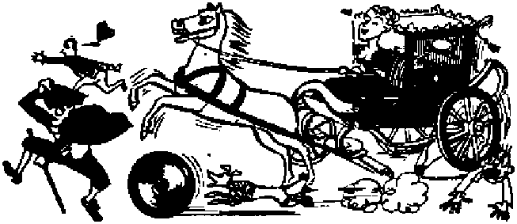
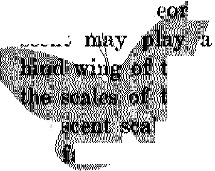

whose subject is recog-the artist is painting

nizable, one wonders if beyond his mental Limit.
Digging out the facts of the Mindszenty case that were buried under a landslide of propaganda
The toll of some 300 dead and 2,000 wounded proves that the black man as well as the white harbors racial hate
Beautiful, yes; but do you know whence they come? where they go? why different colors? of what they are made?
MMk Eternal life for the obedient
MAY 22, 1949 semimonthly
THE MISSION OF THIS JOURNAL
News sources that are able to keep you awake to the vital Issues of our times must be unfettered by censorship and selfish interests. “Awake I** Has no fetters. It recognizes facts, faces facts, is free to publish facts. It is not bound by political ambitions or obligations; it is unhampered by advertisers whose toes must not be tread upon; it is unprejudiced by traditional creeds. This journal keeps itself free that it may speak freely to you. But it does not abuse its freedom. It maintains integrity to truth,
"Awake I” uses the regular news channels, but is not dependent on them. Its own correspondents are on all continents, in scores of nations. From the four comers of the earth their uncensored, on-the-scenes reports come to you through these columns. This journal’s viewpoint is not narrow, but is international. It is read in many nations, in many languages, by persons of all ages. Through its pages many fields of knowledge pass in review—government, commerce, religion, history, geography, science, social conditions, natural wonders—why, its cover* age is os broad as the earth and as high as the heavens.
"Awoke!” pledges itself to righteous principles, to exposing hidden foes and subtle dangers, to championing freedom for all, to comforting mourners and strengthening those disheartened by the failures of a delinquent world, reflecting sure hope for the establishment of a righteous New World.
Get acquainted with “AwakeI” Keep awake by reading "Awake 1”
PUBLJBBED SBlIlMONTBLT By WATCHTOWER BI3LE AND TRACT fibCJETY, INC,
117 Adams Street
N. H. Knorr, Frerttfent
Five cents a copy
Rralttucu should be seat tn in ymir country in couipUance with to guarantee
safe delivery of money. Remittances are accepted at Brooklyn from cmmtries where no office is located, by international utaney order tmly. Subscription rates In different countries an here stated in Joc*l currency, '
Notice of axpintlun (with renewal blank) te nut at least two Ijhuu before (idwcrlpUui expires.
Brooklyn 1T N, Y„ U S. A.
Grant Suites, Sc&retaru
Ono dollar a year
Chino* rt Udnu when sent to our office may be espected effuctlw wltbln one month. Send your old as well as new address. .
Offices Yearly Subscription Bate
Amrita, U.S., 117 Adame 3t., Brooklyn 1, N.Y. fl A Mfrs 11*. 11 Berafoid Rd., Strsthfield. N.8.W. 6a CaMkla, 40 I™ip Ate., Toronto 9, Onturlo Si ■EnglMd, S4 Craven Terrm, Izradon, W. 2 ISs South Africa, 023 boston House, Cape Town 5a
Enlerod m «vood-elM» ntutr al BrwUyn, B. I., Act. of Muth 8, 197?. FrloWd In U. 8. A,
C O N T
The Storm That Destroys Religion
Cardinal Mindseenty, the Nazis and Jews 12
Jehovah's witnesses Executed by
Race Riot Explodes in South Africa
ENTS
Today’s Cities Tomorrow's Ghost Towns! 17
“Red Tide’’ Strikes Florida Coast
Freedom of Conscience in the Philippineg 24 “Thy Word Is Truth’*
Life ^giving Atonement for Mankind
Cloudburst Devastates Minas Geraes
it is high time to awake.—Ramans 13:1193
Volume XXX
Brooklyn, N. Y„ May 22, IMO
Number 10
RELIGION’S LAST STAND
The black eta rm cloud* gather In the East. Each p*«*lng day aece their foreboding m***«* pile higher, and heavily *ag tower over mankind. Only a matter of time till bt>lt> of lightning •tab out from their depth* and rip open the hole* from which will deluge down a, starm of deatructlon. Christendom'* religion* should fear Ft moat. They must coon their last •tend. Even now religion face* a oriole in the form of a Communiat flood from the E**t. Will religion ourvlve It? Will ahe be able to whip her patron nation* into the frenzy of * third world war to protect her? She did raice a gigantic wav* of hysteria qyer the cate of Cardinal Mlndazenty of Hungary. The few facte reported were buried beneath a landallde of propaganda. Now, after a cool Ing-off period, and the eubaldenee of the hysteria wave and the revival of th* rea*onlng power* temporarily drowned thereby, it lc timely to dig up the facte and mb how they fit Into the picture of Ip* gathering atorm, of religion'* laat stand.
WORLD WAR I was fought to make the world safe for democracy. It did not World War II was fought to make the world safe from dictators, It did not. A World War III is now widely discussed as the only means to make the world safe for religion. The explosives are gathered, the fuse is in place, the match is poised. It needs only to be struck to make the flame to light the fuse to set off the destructive fireworks. The agitation of the Mindszenty ease almost provided enough friction to ignite World War III.
On December 29,1948, the government of Hungary announced that Cardinal Mindszenty had been arrested on charges of treason, espionage, crimes directed at the overthrow of the government and selling dollars and dollar checks on the black market. As accomplices, twelve others were arrestea; eight of them priests. Only a short time before Mind-szenty's secretary, priest Zakar, had been taken into custody. The pope was "profoundly grieved and shocked”, and all Hungarian Catholics connected with the arrest were excommunicated. From the time of the arrest of Mindszenty until a few days after his sentencing to life imprisonment, a landslide of Catholic propaganda overwhelmed and buried the facts. Unearthing these facts and separating them from the endless columns of senseless hysteria in which they were entombed in the public press gives a sobering picture.
The charges were based primarily on documents discovered by police on December 23, and which were found in a metal cylinder buried in the cellar of Cardinal Mindszenty s palace. Trial began February 3,1949. Seven of the fourteen were defendants at this trial, five of them priests, and one of them was Cardinal Mindszenty. Of the accused only Zakar had counsel appointed for him; the other six, including Mindszenty, chose their oWn attorneys. The cardinal said that at no time was he hindered in making his defense, that he had access to his lawyer at all times. The defendant has the last word at the; trial, and his final appeal is without time limit. The forty-one foreign correspondents present were of many nationalities. The United Press was represented by an American. Also represented were Associated Press, International News- Service, Reuters, and many of the larger newspapers in the West. One large British paper said the disturbing factor whs "not lack of news, hut the news itself". No “iron curtain"’ sealed off the Budapest courtroom from the worlds and the correspondents covering the trial issued the following statement, signed by all but the New York Times reporter, who was admitted to the triablate, and the United Press representative, who admitted his dispatches were uncensored but that it was contrary to United Press practice to sign. The statement follows, in part:
We categorically wish to deny: (1) That censorship of any kind is being exercised upon our 4elephonic and telegraphic dispatches. (2) That the translation of the trial from Hungarian to our various languages is inaccurate ; the fact is that the majbrity of correspondents either speak Hungarian themselves or are accompanied by their personal interpreters, and there have been no complaints or indications that the official interpreters who are provided in,addition are guilty of any kind of sly distortion, (3) That the only correspondents granted visas or admitted to the courtroom are Communist or Communist sympathizers.
What evidence was produced at the trial to support the charges? First, foreign exchange speculation. Of a total of $141,000 and 15,000 Swiss francs, Mind-szenty declared on $4,800. At the trial he admitted knowing that foreign currency was to be declared and surrendered to the National Bank at the set exchange rate, and admitted that these laws were designed to serve the national economy and fight inflation. Nonetheless, he confessed that he failed to declare foreign money and sold it on the black market at several times the set rate of exchange. Dr. Eszterhazy, a co-defend-ant, said he bought dollar checks from Mindszenty, two of them signed by Cardinal Spellman of New York, at rates even above black market prices. Mind-szenty said he instructed that these sales of money be made and knew they were made on the black market, said he was guilty and offered to make restitution.
The more serious charge, Treason! It was never a secret that the cardinal opposed the government. He vigorously fought land reform. The Catholic ChurcK was one of the country's largest landowners. When their large estates were broken up into small plots for peasants, they protested. The church begrudged the five holds1 given the peasant, yet complained that the one hundred holds allotted each bishop was not enough for a1 livelihood! The cardinal influenced elections, sought to infiltrate Rdyalists (those favoring return of Hapsburg rule) into key positions in political parties. But it was none of these political activities that brought forth the charge of treason.
Mindszenty and the Hungarian bishops opposed nationalization of schools, and issued pastorals condemning it. The cardinal threatened excommunication of every Catholic who aided the scheme. But the state was merely establishing a public school system, one far more religious than in the United States. The procedure was to put the religious schools (which were state-supported anyway) under government control. The teachers, priest or nun or otherwise, became state officials. The school buildings, equipment and property became the state's. The various religions retained the right tp give religious instruction in the schools takep over by the state, and such religious teachers were paid by the state. That is far more than the United States allows, which recently ruled, in
New Mexico, that priests and nuns may not teach in the public schools. In Hungary there is no state interference with theological seminaries or other church schools devoted to training church workers. Hence Hungary allows more church participation in her public schools than does the United States. But, again, it was not Mindszenty’s opposition to nationalization of schools that called forth the treason charge.
Following is the basis for the treason charge. When co-defendant Dr. Jusztin Baranyai was on the stand he told of a plan conceived in 1947 for replacing the present Hungarian government. It was based on several suppositions. First, a third world war. Second, Western powers victorious. Third, Americans enter Hungary as military occupation authorities. Then the political vacuum must be filled. Baranyai had worked out a plan, submitted it to Mindszenty, who studied and approved it and filed it in the metal cylinder buried in the cellar of his palace. It was a vital foundation stone for the treason charge against the cardinal, and in court Mindszenty read the plan, as follows:
If the great vacuum juris occurs, the very first, the most important, and the most difficult question will be to found a regime based on a moral foundation. It would be a political impossibility to base it directly on the defeated revolution [elsewhere translated bolshevism J. To restore the Horthy regime would create new and unpredictable complications. There is only one possibility of quiet evolution, The prince primate [Mindszenty] of the country, with the high rank of prince primate, is the only one in this land sanctified by the traditions of centuries, of nearly a thousand years. According to the ancestral laws of our nation, in the absence of the king ruling power is deposited in the prince primate. His authority has never been doubted by public opinion in the country. In times of difficulty or catastrophe, the nation has always expected him to take the initiative. Today the extreme* ly fortunate situation exists that the present bearer of this rank, Cardinal Jozsef Mindszenty, has raised in the last two years, in these particularly sad years of our national life, the prestige of the prince primate to extraordinary heights. For the first time, perhaps, in the recent history of the country, it has occurred that Protestants, Calvinists, and Lutherans, standing on a nationalist platform, also see him as the only true, predestined leader of the nation. Today the national aspirations of the whole nation are anchored in him. In politics too, only his words are heeded. Like the metropolitan of Athens, he seems to be the only competent authority, and in the same way here, at the beginning of American occupation, it would be his duty to appoint the new government.
Attached was a list of names of men to be appointed prime minister and ministers of justice, commerce, industry, agriculture, public supplies, public education, public health, finance and foreign affairs! On the witness stand Baranyai confessed that this entire plan was to be presented to the American Legation! Why! So that the American occupation authorities would appoint Mindszenty to form this government to fill the vacuum left by the overthrow of the Hungarian Republic! In the United States several Communists are noifr on trial charged with treason, with intent to overthrow the American government. Need we ask what the verdict would be should they be found with a detailed plan calling for a third world war, a Russian victory, Soviet occupation troops in the United States, a provisional head of governmen chosen, with a list of men to be appointed president and cabinet members!
Mindszenty admitted that war was the starting point of the plan, and that scores of his- petitions aimed at worsening the international situation. He could hardly claim to be acting within legitimate political spheres in Hungary. In his confession and tt the trial it was shown that Mindszenty urged foreign intervention in Hungary's domestic affairs, and copies of such letters with replies were found in Mindszenty"s cellar. The foreign news correspondents saw these in Mindszenty’s handwriting, and the replies from the American Legation in Budapest. As an illustration, on December 16, 1946, the cardinal wrote to the American Legation: “I request the help of America, which is fighting for freedom and justice, to put an end to the tremendous pressure and rotting so that the unfortunate Hungarian people can be preserved for Western civilization. A solution is possible with outside help. I could point out the ways and means of this.”
When Schoenfeld was later replaced by Selden Chapin, according to the testimony of both Mindszenty and his secretary Zakar, a few meetings were held between Chapin and the cardinal, but the principal contact was effected through Zakar and the U. S. Legation secretary, Koczak. Zakar testified that Koczak often came late at night, and concerning the material given to the U. S. Legation Mindszenty said in his confession: “It was through the clergy that I obtained from the various parts of the country the political, economic and industrial data which I authorized my secretary to regularly give the Americans.” His confession also stated: "I wished to accomplish a change of regime, with American help. For this reason I kept up regular connections with the Budapest Legation of the Western powers.”
The Hungarian crown, now in possession of the United States army at Wiesbaden, Germany, was a center of controversy. Concerning disposition of this crown Mindszenty wrote to U. S? minister Chapin on August 31, 1947, as follows : “My request to you is to obtain an order from your government, effecting the transportation of the crown by the army and its transfer to the same apostolic power, his holiness the pope,, whose predecessor presented St Stephan with the holy crown in the year 1000. Since this cause is a very important one for our nation, and since demands for its return and military advances might be fatal for the crown, only Rome could reassure us.” Also Cardinal Spellman wrote to the United States secretary of war to prevent the return of the crown to Hungary. Why did Mindszenty want the crown? His confession answers:
For the coronation of Otto [Hapsburg] I wanted,to secure the Hungarian holy crown by all means. I, therefore, did everything possible to prevent the holy crown being surrendered by the American army authorities to the present Hungarian government. . . . I refer to military advances [in his letter to Chapin] because I expected the outbreak of the third world war.
Both Mindszenty and his secretary Zakar told of a secret meeting between the cardinal and Archduke Otto in a nunnery near Chicago when Mindszenty was in the United States in July, 1947, The Royalist cause was discussed, and at a subsequent meeting with Cardinal Spellman in New York city Zakar said Spellman spoke of a^post-World War III Catholic European bloc of nations under American auspices and that Hungarian Royalists- should hold themselves in readiness for any opportunity to take power. Also, Mindszenty left with Spellman a letter commissioning Otto to represent Hungarian Catholics abroad.
After Mindszenty’s return the meetings with Chapin occurred, and in November, 1948, Mindszenty testified that Chapin commented on the strong campaign against the cardinal in the pres^ and other ways, and proposed that he go abroad, and offered to help in this. Mindszenty chose to stay in Hungary. But on January 23, 1949, just a few days before trial and while in custody the cardinal attempted to smuggle a letter out to Chapin, stating that he feared a death sentence and asked for an escape car and plane and requested the American minister to “promise the pilot $4,000 in the interest of the cause”.
Just a question here for sober reflection : If a high churchman in the United States secretly passed damaging information to the Soviet Legation as Mindszenty did to the American one, would the United States prosecute! It is prosecuting Judith Copion right now, on much leas evidence; also the Russian involved.
Confession, Verdict, Propaganda
Failing to flee the country, Mindszenty tried to avoid trial. Just before the trial he wrote to the minister of justice, admitting that he had been the cause of much friction between church and state and that agreement was necessary for the good of both and that without it the country was threatened with discord and decay. He also said:
Before the trial, which is 'soon to open, I voluntarily admit that I have committed the acts I am charged with according to the penal code of the state. - . . After this admission and declaration, the trial regarding my person docs not»seem to .be absolutely necessary. Therefore, not because of my person, but considering my position, I ask that my case be exempted from the trial on February 3.
But the cardinal's attempt to trade on his high church position did not work, his endeavor to leave his co-defendants stand alone in public trial failed. The weighty proofs of guilt, many of them in his own handwriting, crushed him. In the face of such evidence, who could keep up a pretense of innocence! Who would not wilt when confronted with it! So Mindszenty confessed: ‘T am guilty in principle and detail of most of the accusations made,” A few days after the trial close’d the sentence was announced: Mindszenty guilty and sentenced to life imprisonment; his six co-defendants, four of them .priests, draw sentences ranging from three years' imprisonment to life. All appealed except priest Zakar.
The Western world rose to the cardinal's defense with a mighty wave of emotional denunciations of his arrest and trial and sentence. But, now that the storm has calmed, the evidence stands unshaken; the hysterical flood of name-calling was as weak as the cardinal's couyt defense. The trial was condemned by nations, state legislatures, high officials, religious dignitaries, fawning politicians, toadying newspapers and hundreds of other pipsqueaks anxious to jump- through the Hierarchy's hoop. Even the United Nations was forced to knuckle under as a stooge to Catholic propagandists, voting 30-7 to review the case, though it means meddling in the internal affairs of a nation not even a U. N, member. The fact that twenty nations abstained from voting on the question showed its reluctance to deteriorate into a sounding board for squabbling religious ax-grinders.
Worn threadbare to describe the trial were such flashy phrases as travesty of justice, rape of justice, outrage to freedom, insult to the human conscience, infamous, kangaroo court, mimicry of justice, super crime against freedom, sinister comedy, mockery and sham, sickening sham, crass railroading, foul false trial, rigged and fixed, terrible outrage, parody of justice, crucified justice, ad infinitum, ad nauseam. If the trial were so flagrant one would think a wealth of refutation could be leveled against it; but no, none appeared. Just the trite expressions, dutifully repeated.
Religion on Tried?
Seeking to shift attention from Mind-szent/s political intrigues, Catholic clerics in particular ballyhooed the trial as against religion, all religion. Proof? No, no patience for such trivial things; something more inflammatory than that; and if any object, slap a label of “Communist” on them! So the sweeping charges flooded forth unchecked: ‘Russia has declared war on the Christian world!
This fight is not between Catholicism and Communism but between every type of Christianity and Godless Communism! Between Christ and anti-Christ! A challenge to all Christianity! The trial of Mindszenty compares with the trial of Christ, and Budapest is the twentiethcentury Jerusalem! The infamous trial will live in history as does the black record of Pontius Piiate!’ Here, again, so much whipped-up froth without body or support fails to fill or satisfy sober minds. Any facts to case it upon?
Gleaned from the public press reports are certain facts that carry weight when grouped in a body. Not a word in the indictment or evidence at the trial was based on Mindszenty religious activities, upon his provocative, sermons or pastorals. The Bench of Bishops of the Catholic Church in Hungary said: “Leave the case of Mindszenty to the wise discretion of the government” Groups of priests and laymen had demanded the cardinal's resignation because he blocked peace between church and state. One priest spoke of his arrest as the result of Mindszenty’s “political blunders, for which the church generally should not be held accountable”. In Borne Jesuit circles stated that it was well known that the Hungarian hierarchy was divided, Mindszenty’s followers refusing to negotiate with the state and another group headed by Archbishop Eger wanting an agreement with the government.
Certainly the Hungarian government provides more for religion than most of the big Western powers. In her public schools the clergy teach, regular classes in religion are held, and attendance at these religious classes is obligatory! If child does not attend for this religious indoctrination it does not advance to higher classes. Catholic bishops and priests are paid high salaries by the state, and Cardinal Mindszenty’s salary from the state was three times as much as that drawn by the nation’s prime minister! Would the United States thus support religion ? The very Constitution forbids it! Different Protestant bodies have announced that in Hungary they enjoy religious freedom, and urged Protestants in Western lands not to conclude from the Mindszenty trial that Christianity was endangered.
. Many labor under a delusion that religious robes grant immunity to the wearer. Priestly garb is no license for iniquity. God does not count a priest immune, for when Eli’s sons, priests in Israel, did evil He pronounced adverse judgment against them and caused them to be slain. (1 Samuel 3:10-14; 4:11) Christ Jesus denounced 'wolves in sheep’s clothing’ and called priests hypocrites, vipers and sons of Satan. (Matthew 7:15;23: 27, 33; John 8: 44) Crime may not be committed behind a religious cloak; in fact, it is worse for a Christian to stoop to crime and thereby bring reproach to Gbd. The Hungarian government made it plain that they were not trying Mindsaenty as a cardinal but as a criminal. Deputy premier Rakosi explained: “We must tame fascists who appear in priest’s clothing.”
The cardinal did not pan out to be the martyr the Catholic Church wanted. The Vatican was informed of the indictment against Mindszenty before he was arrested and given the opportunity to withdraw him; but the Vatican would not do so. It wanted a hero. But the hero did not fill a star’s role, so as an “out” the drug-and-tor,thre tale was circulated. Even the pope supported it by saying that the constant fight of atheism against the church “now commands the most insidious devices of advanced modern technique”. Other Catholic dignitaries caught up the cry, and the press dutifully relayed their hysterical screams to the public’s ears.
Perhaps the noisiest outcry came from Cardinal Spellman, and it is possible that his involvement in the case may nave lent power to his lungs. Bight after the trial he said of Mindszenty, "Torturings and drugging put him beyond the reach or realm of human help/* and shortly after referred to newspaper photos of the accused and cried out, "Can you fail to s$e here a man tortured and drugged?” Publishers can obligingly make photos show a man at his best, or his worst when desired. Moreover, has not everyone seen overseas photos in newspapers that are highly unflattering? Why, the guards in the photo looked more "dopey” than Mindszenty! But that was the extent of Spellman’s proof.
But alas! he got entangled in his affected rhetoric and flair for melodrama and contradicted himself. After emoting that an innocent man had been tortured and drugged to break his will so as to squeeze out a confession of guilt, he pulled an aboutface and gloried in Slindszenty*s guilt and crowded himself in for a share: "If this be treason to deny allegiance to an atheistic Communist government, then thank God Cardinal Mindszenty confessed to treason, as would I, if this free land of America were ever conquered by demoniac people using every foul means to overthrow our republic!” But Spellman need not feel bad. Several other Catholic sources did exactly the same thing. Even the Vatican referred to torture and drugging as methods to get the confession, then later commented on the guilty plea: "He chose the way of justice and honor. He admitted what was true and denied what was false.”
Actually, Mindszenty did confess guilt "in principle and detail of most of the accusations”, but he also denied guilt on some points and bluntly refused to answer certain; questions at the trial. That does not harmonize with the drug story. In court he could have told his story into the ears of the world, what with the forty-one foreign correspondents and their interpreters present. Instead, he admitted guilt and even retracted a letter written some time earlier that claimed any confession he would make would come from torture. He said he was not forced to confess, and that when he wrbte that letter ‘he did not see many things which he sees today*. Doubtless he did not then foresee Jhis hidden documents in the hands of the police. As for his appearance, the reporters said he was ruddy, vigorous, calm, had lost no weight and did not give the appearance of a tortured or drugged man.
Scientists label the drug tale nonsense. Science News Letter of March 5, under the title "Scientists Are Skeptical on Drugging of Mindszenty”, states that no known drug would make a man recant previous statements. Actedron, supposedly the drug used, is known in thia country as benzedrine and is used in pep pills. Students sometimes use it to keep them awake for long hours of study. Albert Deutsch, in the New York Post, declared the drug story "one of the most preposterous drug hoaxes perpetrated on a gullible public in recent years”. Psychiatrists claimed that under drugs a man would speak what was on his mind and heart, as in the case of the truth serum. One devoted to Bible study might recite scriptures; one fired with hatred of Communism might rant against it, and so on.
Though little space was given to it in the press, objection to the senseless hysteria whipped up over the Mindszenty case came from many Protestant ministers, churches and papers. Doubtless much more protest would have been made had the Protestants not feared being classed as Communists, a tactic that Bishop Oxnam referred to as "Ivnching by label”. Many lamented that the case had been used politically to fire the cold war, and some reminded that the "two great threats to world peace today are the Communist internationale and the Romanist internation ale”, and called to mind the Vatican's notonoua support of such Catholic dictators as Hitler, Mussolini and Franco as well as Hirohito.
And if the Catholic Church and the public press are sincerely interested in religious freedom, why no protest at the arrest of Lutheran bishop Ordass in Hungary last September 1 Why no outcry when fifteen Protestant clergymen were indicted in Bulgaria and four given life imprisonment, but instead Roman Catholic bishops there signed a statement denouncing the Protestants! Why does Vatican-dominated Franco forbid Protestants to build churches in Spain, enlarge present ones, advertise services, issue literature, or place signs or lights outside their places of worship to identify them! Why does Pope Pius XII condemn a government that makes a church remain “within the four walls of the temple, forgetting the divine mandate received from CJirist: Go ye into the crossroads and teach the people”, then) restrict Protestants in Spain and other Catholic-dominated lands to the four walls of. little unidentified meetingplaces f Why no protests against priests that organize and lead mobs against other religious groups in Poland, Hungary, Mexico, Brazil, Colombia and other predominantly Catholic countries? Why no protest when the United States' satellite, Greece, executes Jehovah's witnesses because they have religious scruples against killing human creatures!
One answer covers all the questions: the Roman Catholic Hierarchy and the public press under its control are not sincerely concerned about freedom for all, but only about freedom for Catholicism. Surely the Mindszenty case forcefully demonstrated one thing, namely, the press is the Hierarchy's obsequious tool. It is a willing channel for papal propaganda, a medium for its maudlin and sentimental drivel. For instance, when Mindszenty was arrested the pope turned pale, when he was brought to trial the pope turned pale, when he was sentenced the pope turned pale. And frequently it was reported how this papal paleface was in tears, grieved, shocked and shaken; but in his speech on February 21 he inconsistently and blasphemously said: “The pope, by divine premise, is, even in his human weakness, invincible and unshakable.”
The Hierarchy plays on sympathy. Remember when Archbishop Stepinac was jailed in Czechoslovakia? Soon afterwards reports circulated that he was being tortured and slowly starved. But when Protestant clergymen visited him to check the reports they found him well treated and in good health. Now, on March 17, reports gushed through that Mindszenty’s condition had “worsened suddenly”, that he was transferred from his cell to a hospital, and one rumor even had him dying. And movie-goers may brace themselves for a stiff dose of nauseating propaganda, for Warner Brothers of Hollywood has announced it will film a story of the Mindszenty trial.
Religion is frightened. Not the “pure religion” mentioned at James 1: 27, b\jt the big orthodox religions of Christendom that have actually drifted far from true worship. They have become interested in money, esteem of creatures, and political power. They have backslid from Bible teachings, strayed from the footsteps Jesus left for them to follow. Becoming worldly and materially minded, they are spiritually undernourished. Replacing the Bible with pagan teaching, traditions of men, social theorizings, scientific skepticisms and political meddlings, they have weakened the people's faith in the Bible. They, yes, organized religions, have actually paved the way for the onsurging Red tide of Communism by destroying faith in God and the Bible by their hypocrisies. That is why Communism has either gained control or become powerful in such Catholic countries as Poland, Czechoslovakia, Hungary, Bulgaria, yes, and even at the Vatican’s very doorstep, Italy.
So impure religion is frightened. They see the r$d and glowering clouds of Communism rolling in from the East. Frantically they strive to unite their religious forces for a last stand, yet continue to be a house divided destined to fall. Not only divided itself, religion divides forces within nations, religion divides one nation from another, religion divides the world. Has she not widened the breach between East and West through her hysterical agitation of the Mindszenty case, all over a political cardinal caught red-handed at his crimes? Religion seeks a “sword of the church” to pierce to death the communist threat to her existence. She foments a crusade. But it is her own failures that have spelled atheism’s successes.
Now she is terrified by the storm clouds in the East. Well she might be. She is so vulnerable. Specially vulnerable to "the sword of the spirit”, the Bible. Even the communists use it against her. A recent press report from Rome tells of Hungarian Communists reading scriptures on street corners, embarrassing scriptures such as Jesus’ denunciations of hypocrites that say one thing and do another, appear beautiful outwardly but are filthy within, love money, mix in with the world and its dirty politics. Then the Communists turn to the crowds and ask, Who fit these descriptions today? do not the religious priests commit these wrongs? The Communists may be the ones reading the texts, but it is the texts themselves that put it into the minds of the people to abandon religion as a hypocritical fake. Revelation 17:16,17 shows that God foretold that the rulers of the world would turn on religion, which has disobeyed God and become a spiritual harlot by having illicit relations with the nations. (James 4:4) Well, is it not God through His Word that wises up the peoples as to religion’s hypocrisy, re-
MJ.Y 1S43
gardless of who it is that reads the Spripture texts?
Jehovah’s witnesses declare the Bible truths concerning false religion, and this exposure is likened to a storm of hail and rain that sweeps away religion’s refuge of lies and overflows her hiding place. (Isaiah 28:17-20) Because Jehovah’s witnesses expose orthodox religion they are misrepresented as Communists by irate religionists. But Jehovah’s witnesses are not atheists, not supporters of earthly governments, not working for Communism, but are announcing Jehovah’s kingdom through Christ. It is God’s Word that condemns hypocritical religion, and God that puts it into the rulers’ minds to cast it off, not Jehovah’s witnesses. In the Soviet, according to the 1949 Yearbook of Jehovah's witnesses, nearly 2,000 of the Witnesses are in Siberian wqrk camps. Many others have been killed in Russia, and their preaching is not allowed openly, nor their meetings, nor literature, nor lawyers for their defense in court. And when they are imprisoned or murdered they do not rush to the public press with cowardly sob stories to get world sympathy or agitate a crusade. For God’s and Christ’s name’s sake they suffer and die and count it a privilege, and God and Christ will be their salvation, not any worldly nations! Vengeance is His! He will repay harsh totalitarians at Armageddon!
Armageddon. That is the storm that will fell religion in her last stand. And not just religion, but all the nations of this wrnrld that are under Satan thegod of this world. (2 Corinthians 4:4) That includes Russia, and her red religion of Communism. (Daniel 2:44) Jehovah God speaks of Armageddon as a storm, and of Christ, the Leader of His angelic hosts at that time, as a king coming out of the east. That storm out of the east is the one that religion and all the world should, consider. The signs of its approach are all about us. (Matthew 24) When it strikes, religion will fall. Why?
11
Jesus answers: “Every one that hearettt these sayings of mine, and doeth them not, shafi be likened unto a foolish man, which built his house upon the sand; and the rain descended, and the floods came, and the winds blew, and beat noon that house; and it fell.” (Matthew 7:24-27) Religions, of this world are founded on nearly everything biit-Jhe Bible's sayings, and her divided house will fall. She has sown the tfind. At Armageddon she will reap the whirlwind.—Hos^a 8:7*
(Cardinal MinJszenty, the Nazis and Jews
Catholic propaganda has painted Mindszenty as a hero in the resistance to Nazi occupation and as a friend of the Jews. During 1942 Mindszenty wrote: “Italy, as a great power, happily united in language, race and religion, has taken over, on the side of the Vatican, the historic role of France and the Hapsburg empire.
Mussolini is responsible for Italy’s present greatness.” Again in that year: “Dazzling vista*
open up before heroic sacrifice. The Japanese living Stukas, living torpedoes, and living bombs show that the heroic soldiers are ready to sacrifice their lives, to go together with the tools of destruction towards their destination.” True, he was arrested and jailed by the Nazi regime two yeafs later, but apparently not for political reasons. A Nazi lawyer, in his capacity as county prefect, wanted to requisition a part of Mihdszenty’s palace and take over some 1,500 men’s shirts and drawers stored there. Mindszenty resisted, and was arrested on charges of hoarding clothes and refusing use of his palace. The cardinal admitted this to be the case.
As to Mindszenty and the Jews, the cardinal’s statement written in his own hand reads;
“On April 19, 1938, Viktor Toth, who was a great sympathizer of the fascists, and I, convoked a conference of priests in Budapest, , -. . The conference committed itself to follow a National Social line. We decided that we thought the Jewish problem ought to be solved by the way of racial laws in the same way as the fascists wanted it.” As early as 1919 Mindszenty wrote in a newspaper article: “The press, until now, has been the vanguard of Jewry striving for world domination, crashing through every obstruction, tn the future, the press will be ours, Christian Hungarians. The Jewish press destroyed Hungary, the Christian press will resurrect it.” His anti-Semitism is as strong today. His planned rule following a third world war did not overlook, the Jews, and the minutes of the episcopal conference on May 24,1945, are enlightening: “It is our good fortune that the great reservoir of Galician and Bukovinian Jewsj the millions of the Jewish masses in the ghetto, have as a result of the German war of destruction been reduced to some 500,900.”
Jehovah's witnesses Executed by Greek Government
Scant notice was given by a few papers in pie United States when in February the Greek government executed John Tsoukaris, one of Jehovah’s witnesses, be-cause he refused military service as a conscientious objector. No notice appeared in the public press when another one of Jehovah’s witnesses, George Orphanidis, was executed for similiar reasons on March 2. Also awaiting execution (at the time of this writing) of the death sentences passed against them for the same reason are six others of Jehovah’s witnesses, namely, Canellos Calliontzidis, Prokopios Delis, A than assios Nizamis, Efthymios Vassilopulos, Telemachoa Markinos and Artemios Liannacopulos. Four others halve been sentenced to life imprisonment. In the case of recently executed George Orphani-dis, he was not immediately committed for trial, but military authorities cruelly beat him daily till he bled, to force him to renounce his position as one of Jehovah’s witnesses. He stood firm unto death before & government firing squad. But no publicity for such horrible deeds. It seems one must have a cardinal’s robCs and confess to treason, spying and blackmarket money profiteering to rouse the righteous wrath of the Western democracies.
RACE RIOT EXPLODES
SOUTH AFRICA
wh ma
eir ton
\an lip-g\p<*i-ivexle-
surge- at* /nati< traltem \ te racSs^or the ^orla. M de3‘and/some h awe achieved inde-pendenee and theoretical equality with the white man in the councils of the nations. One consequence has been to focus increasing world attention on racial relationships in the multi-racial country of the Union of South Africa. The world looked critically at the gulf that divides the white man from his non-white fellows and was apt to overlook the chasms of racial prejudice which still divide the non-whites from each other.
South Africa's population of about ten million is divided broadly into four racial groups: two million whites, seven million African Natives (Bantu), three-quarter million Coloureds (of mixed blood), and a quarter million Indians. The white man rules, and the eight million non-whites have little voice in the country’s government. Observers have predicted a coalition of the non-whites which will bring disaster to the white man. In recent years and months this non-white coalition seemed to draw near as non-white leaders voiced increasingly the community of interests of aU nonwhites in South Africa.
The drawing together of Indian and African leaders was particularly noticeable. Observers throughout the world were therefore startled when, on January 13, Africans turned on Indians in a sudden explosion of bitter anger, and battered, beat and burnt brown men, women and children, savagely and exult-ingly, in the worst racial Tints in united South Africa’s brief history-
The green subtropical province of Natal is the home of nearly all South Africa’s 250,000 Indians, and of this number nearly half live in and around Durban, NataFs chief town and South Africa^ busiest seaport. In Durban the Indian, in a minority elsewhere in South Africa, is numerically equal to the white inhabitants and slightly outnumbers the Africans. And in Durban, as in the rest of Natal, the trading classes among the Indians have flourished. A primary source of Indian wealth is the Native trade.
Natal is also the home of the Zulus, the proudest and most warlike of all African Native tribes. Most of Durban’s Native population belong to this tribe which once exercised despotic sway over all Natal and beyond. In Durban, wa tte evening of January 13 last, an Indian assaulted and injured a Zulu umfaan (youth). An angry crowd of Natives gathered round as ambulance men attended to the boy’s hurts. Someone pelted a passing Indian with stones, and then, when the false rumor was circulated that the umfaan had died, primitive passions broke loose, wreaking savage vengeance.
Three days and nights of terror and tragedy for Durban’s Indians followed. Word was passed from lip to lip proclaiming war, and Durban’s Africans rose in their thousands, thirsting for the blood of the brown men from Asia. First to feel the impact was the non-European business area, predominantly Indian-owned. Bands of Native^, Shouting war cries and brandishing heavy sticks, ran through the streets, smashing plate-glass windows, wrecking premises, looting, burning, beating. The Indians, for the most part, shivered in their locked dwellings behind the shops and left the Natives to work their will. Durban’s police force strove to gam wuvrwi uut their numbers were totally inadequate.
The attacking Africans fanned out to the suburbs, to the outer limits of the city where most of Durban’s Indians live, among rolling hills and bush-clad valleys. In some eases the Zulus moved into action after the manner of their ancestors, in impi formation and chanting in the old Zulu tradition. Their weapons, however, were not the assagai and oxhide shield of old, ’ but vicious caneknives and bush-knives, iron bars and spikes, axes, heavy sticks and stones. The blood-lust was strong upon them, The impis would sweep down upon Indian dwellings, hacking and newing frightfully, and when the last inhabitant lay dying, dead or unconscious, or had hurriedly fled, the night sky would reflect another fire. In some cases the Natives locked Indian families in their houses and burned them alive. They did not spare age or tender years. Old men and infants felt the dreadful impact of their anger.
The Damage Wrought
Meanwhile the white man was striving to restore order. The hopelessly outnumbered police force was joined by units from the army, air toree and navy, and for days and nights Durban became accustomed to the noise of rifle fire and the quick chatter of sub machine-guns as the armed forces strove to turn the frenzied Natives from their prey. The injured multiplied at a frightful rate. A trail of blood covered every street leading to the King Edward hospital for non-Europeans. This hospital and others were swamped. Emergency hospitals were opened,, and these, too, were soon filled.
Curiously, as the Natives and Indians waited together to receive medical attention—many trying to stem the flow of blood with sheets and towels—their enmity seemed to leave them. Several cases were reported of strong young Natives picking up Indians who had collapsed and carrying them into the hospital buildings, it was reported, too, that a Native in the riot areas had attempted to rescue several Indian children trapped in a burning house and had perished with them. Not least pitiful among the flood of broken, bewildered humanity seeking aid for their ghastly hurts were the number of rape victims, mostly young Indian girls. Some of them are reported to have been shockingly youthful.
Refugees became the major problem. Terrified Indians fled from their homes and sought safety in the shadow of police stations. Even here only the fixed bayonets of the white man kept their vengeful and determined attackers from reaching them. Soon some 30,000 Indians, a quarter of Durban’s entire Indian population, were huddled together in hastily constructed camps. Here they remained for days, stunned and bewildered by the suddenness of the tragedy, too terrified to move. Many had lost everything they had possessed. Others did not know if their homes still stood or their families still lived.
The counted .dead of both races numbered 140. In addition, one European was shot by the police for looting. Indian leaders have declared that the official figures are conservative, that uncounted victims, including many burned to ashes in gutted buildings, would bring the total dead to around 300. The seriously injured totaled just under 2,000. Of these, 30 were Europeans. But a feature of the riots was the almost complete lack of animosity shown by the Natives, even in their most frenzied state, toward the Europeans.
The vigorous measures adopted by the police und services had their inevitable effect, and by the third day (Sunday) the rioting had become sporadic and isolated. But Durban and Natal, and indeed South Africa, are now faced with the aftermath. The “battle of Durban” must be added to other evidence that shows that new factors are entering the South African racial arena.
Political opportunists were not slow to give reasons for the outbreak. Many of these reasons have no evidence and little logic to support them. Among such must be counted the claim by certain Indian leaders that "the Zulus were deliberately incited to put the Indians into a panic so that they would pack their belongings and leave South Africa”. The reason which the rioters themselves gave was simple: "You took our money from us on the black market,” they yelled, as they looted stores and houses, "and now we are getting it back!" The issues which led to the outbreak'are complex and varied, but there can be little doubt that the major cause of the rioting is the economic treatment which the Natives have received at the hands of Indian traders.
It would be unfair to class the Indians as a race of black-marketeers. The working-class Indian, who forms the bulk of Natal's Indian population, is on the average a simple, poor, industrious man who asks little more than to be left in peace. He is as much a victim of economic oppression as is the Native. It is ironically tragic that he should have had to bear the brunt of the black man's wrath.
But it seems pretty plain that Indian traders, who monopolize the Native (and Indian) trade in Natal, have turned the economic screws until they squeaked. The Zulu, a proud man and resentful of injustice, has simmered silently for years. It needed bbt a spark to blow the lid off, to release a flood of blind, unreasonable race prejudice and hatred.
The Natives are quiet now, but their anger and resentment continue. They are boycotting vigorously and effectively all Indian enterprise, the shops which previously supplied their food and clothing, the Indian buses which catered for their transport needs. They are demanding that these services be rendered to theih by men of their own race. It is of this new thing that white South Africa hiust take note. The tide of nationalism which is sweeping the world has not left the Bantu, untouched. There has never been a Bantu nation. Even the Zulus, foremost representatives of the Bantu race, have been and still are divided into conflicting tribes and factions. But the Bantu is losing his tribalism. He is beginning to see himself as a member, not of a tribe, but of a nation, seven million strong.—A wake! correspondent in South Africa.
Qlutton
The biggest shovel dipper ever built can gobble tip 46 cubic yards in one bite., Attached to a power shovel with a seven-story reach, the big dipper was tested at a strip coal mine in Ohio. Operating at the rate of one bite a minute, it stripped away hundreds of tons of “overburden” (earth) an hour and uncovered coal Beams 80 feet below the surface.
e^techcmicdl Dwarf
Electric motors smaller than the diamond in a ring are now being made for use in moving-picture cameras, mechanical toys and animated Christmas-tree ornaments. Weighing less than a gram (454 grams to a pound) and measuring 3/16 of an inch in length and diameter, this dwarf motor .requires 1} volts of electricity and runs with high efficiency at 7,000 revolutions per minute.
MODERN ART MODERN'*
C Ordinarily the exponents of modern art assume an attitude of indifference to criticism- Proud and miag in their vagaries they show aa little interest in the world as an opossum “playing possum”. But opossums sometimes change the routine and instead of playing dead they take to a tree and find themselves “out on a limb”. This is the ridiculous position taken by the directors of the Museum of Modern Art in New York city. Last November they displayed a selection of 21 pieces of modern art and alongside them set a number of historic examples. Many of these examples were hundreds of years old-and included extremely stylized sculptures and paintings from former centuries. Their similarity to the stylized art of today was designed to show that modern art is “legitimate”, that it is a respectable branch on a deep-rooted family tree; But unlike the tree whose branches grow upward and outward, these modern art advocates have chosen the weeping willow. There they hang drooped down near the tree’s base, next to ancient Egyptian and Greek art. Is this making progress! It appears that modem art is not so modem. All that is lacking now is for someone to discover the similarity of modern art to that of the cave man and these artists who call themselves “modem” will be r^ght back where they started from.
C It appears that-the modem artist is an’expert at backtracking, for many of them return to their youth and insist on painting like children. This is not said to berate the work of children, for the child’s work represents honest effort. The drawings produced in the kindergarten portray the childish impressions of the tots’ undeveloped understanding of things about them. They are commendable from this viewpoint. However, most people outgrow their childhood and are able by their works to give evidence of growth. Not so the modem artist. He insists on clinging to his diaper days. Like a spoiled brat who insists on having his way, the modem artist lets loose his emotions and inner feelings. These he translates into some permanent medium such as oil paint on canvas or a sculpture in metal or stone. Whimsies and vagaries of the imagination seem very important to him, but the childish results betray a lack of normal, mature feeling or thinking. Such scrawls and doo
dling would hardly do credit to a 1 O-year-old child. If a gallery-goer sees a piece of modern art
whose subject is recog-the artist is painting
nizable, one wonders if beyond his mental Limit.
Prolonged Bath
Some time ago a Brooklyn housewife may have set an endurance record for soaking in a bathtub, but through no choice of her own. She had deposited her 280-pound frame in a zinc-lined tub in the early evening. When she sought to withdraw herself at the conclusion of the bath she could not. She was stuck, wedged in the tub. She shouted for help, all night she shouted, but no one heard her cries. She could not reach the drain to pull the plug and as a result stayed awake all night for fear of drown? ing. At 9:30 the, next morning her son found her. He called the neighbors, then the police, then the emergency squad. Nine men could not extricate her, even after applying rubbing oil. Finally the tub was pried apart with crowbars to release her, after a 17-hour bath.
J c&ight Squeeze
Last February in Oklahoma a$l(000 Hereford cow bolted into a silo through & 17" x 25J" door. And there she stayed, quietly munching grass in the circular concrete structure. But like so many persons, Grady the cow had got into a mess easier than she could get out. In fact, she couldn’t. When her plight was publicized solutions came pouring in from 45 states and Canada. Finally to the rescue came the farm editor of the Denver Post. He greased Grady generously, put her head and forefeet through the opening, bad a veterinarian jab her with a hypodermic to relax her, then strong hands gave a mighty heave-ho at her rear. Like any lady, Grady resented such-familiarity and kicked and jerked herself through the hole and lumbered into the barnyard.
Today’s Cities
f Tomorrow’s Ghost Towns?
NOTED traffic engineer sounded this grim warning recently: "Tomorrow the downtown districts may be studded with the abandoned remains 4of buildings as are the cities of Europe today?' The result of atom bombs! No, something less spectacular but perhaps just as damaging. He was referring to traffic congestion and its end-product "decentralization".
Are city officials worried? Plenty, and here's why: Every day more and more businesses and industries are striking out for the suburbs. For instance, a year ago the drive-in theater was considered a novelty. Big city movie operators gave it hardly a passing nodx But today there are over 700 of these show places throughout the country and many more are being built all the time. Branch stores, too, have been multiplying. In some cases main stores have become little more than warehouses for their country cousins.
Home builders have also slipped into their seven-league boots and are heading for greener, less congested, pastures. They are building in sections where kids can play safely and where there isn’t the frequent screech of auto brakes to make a mother's blood run cold.
Does all this mean the city of today will be a ghost town tomorrow? Possibly, unless city officials act now. The time is long past for nostrums or pain-killers. Our cities need cures, not remedies. Oneway streets, tricky traffic lights, parking meters, involved cloverleafs, and the like, are good as far as they go. However, they just deal with the effect. City officials must remove the cause.
Traffic congestion is nothing new. Two thousand years ago, the streets of Rome
were so snarled with traffic that the emperor of the time banned all except government chariots from the Forum area, Records don't tell us how effective the ban was. Or how the Romans reacted to it. During the reign of Louis XV it was fashionable for the noblewomen to drive their own carriages through the streets of Paris. However, it was soon apparent that milady's place was in the salon and not in the driver’s seat. Accidents steadily mounted and congestion became almost intolerable. So Louis and his ministers decided to do something about it. They forbade all women under 30 years of age from driving. The results were most gratifying: all women ceased driving, since none would admit she was over 301
Today’s congestion problems are caused by the private automobile. Years ago, the city was small. Industries were simple, business was leisurely and the tempo of the community was unhurried. Overnight all this changed. The auto brought with it new ideas. Buildings, cramped for space on the ground, began stretching skyward. Mills became mighty factories turning out machines of peace and, sadly enough, weapons of war. Commerce was now geared to horsepower, not the horse. Whirling dynamos played the tune, and the American people got into step.
But this automotive revolution did not
change city streets. The streets of the big city and the streets of the little town remained the same. Instead of being made over they were macadamized. As more and more can were pumped into downtown areas, slowly the arteries began to harden. And today, the average vehicle speed in congested streets is three miles an hour—seven miles an hour slower than Old Dobbin used to go!
Many Americans, especially those who live in and around cities, accept the everincreasing trend to the suburbs as a matter of course. Traffic engineers and city officials, On the other hand, do not treat it so lightly. Charles JI. Noble, New Jersey State Highway engineer, feels that if this exodus isn't curbed, “stagnation, decay and finally bankruptcy" will result. He stated not long ago: “Investment in buildings, industrial plants, homes, parks, schools, water supply and all improvements which make up modern metropolitan areas runs into billions of dollars. To jeopardize this high investment is unthinkable/’ Guy Hecker, executive manager of the American Transit Association, reminded city officials recently that they must face the sad fact that “remedies used to ease the traffic problem have not worked". Despite the tremendous sums ladled out in the past, he added, traffic congestion still continues to cripple the lifestream of the cities.
Is there an alternative? Yes, say city planners. They sum it up this way: “Cities must encourage moving people, not vehicles. In other words, people must be wooed into riding by transit instead of by private auto on car-choked city streets. The argument is backed up by some convincing figures. The average auto, according to a national survey, carries only 1,7 persons. This means that two-thirds of the available auto space is going to waste. Twenty-nine cars, therefore, are needed to carry but fifty persons. These 50 people could all
18
be carried in one public transit vehicle^ whereas a person in a moving auto takes up 500 feet of street space, the same person in a moving bus, trackless trolley or street-car uses but 70 square feet.
But vast engineering projects make the city alluring to the motorists. Broad, straight highways lead into downtown sectidns; tunnels snake beneath rivers, emerging in the heart of business and financial districts; and bridges whisk motorists to the city shores quickly and conveniently. As a result, cars pour into the city like ants lured to a honey pot!
What should be done, post signs at the outskirts of every city saying: “This Municipality Closed to Pleasure Driving"? Hardly. Such a law would incur the wrath of autoists and auto clubs from coast to coast. Many motorists ask: ‘Why don’t cities build more garages and parking lots?” The answer is that there is little space available for such construction. That which is available usually is prohibitively-priceA In cities where downtown property has been turned over to parking concessions, the actual number of cars which can be accommodated makes but a meager dent.
Certain measures taken by New York to curb traffic congestion are worth noting. About two years ago, City Hall announced there would be no more curb parking in much of midtown and downtown Manhattan, The purpose of the ban was to speed up traffic on such important arteries as Fifth Avenue and Broadway. It hassproved to be quite successful although many streets still get gummed np with discouraging regularity, due mostly to inadequate enforcement of traffic regulations. The old World's Fair parking lot in Flushing Meadows has been opened to Manhattanbound commuters. Drivers are asked to park here, free of charge, and take a subway the rest of the way to town. This plan, dubbed “outskirt” or “fringe" parking by traffic experts, is regarded as
Aw AKE I
sound, because it filters oft the oars before they reach the congested sones.
San Francisco has long been badgered by traffic snarls and inadequate public transit Shortly, both may be things of the past. The citizens can be given credit for attempting to wipe out the city’s congestion. About a year ago, San Franciscans were asked to vote “yes” or “no” whether they wanted a 20-million-dollar transit modernization program put in the works. The ballots showed they wanted the program, overwhelmingly. The city is now in the process of buying 411 trackless trolleys, 55 streamlined streetcars and about 200 motor buses. Some day, soon, San Francisco residents will be riding from the waterfront to the top of Russian Hill in up-to-date, comfortable transit vehicles.
Public conveyances are being made more efficient and attractive, too. In the field of surface transit, manufacturers of silent electric trolley coaches are making big strides. This newest of public vehicles has always won favor because it is quiet and does not produce objectionable engine fumes. Many of the coaches that serve Atlanta, for instance, are completely air-conditioned. In Cincinnati FM radios, designed to bring the transit rider music while he travels, have been installed. In other cities, the builders have installed really high standee windows, so that-the straphanger won’t have to stoop to see his stop. The seats in some coaches are upholstered with Velon, a special plastic fabric that is long-wearing and decorative. Even the raucous signal buzzer has given way to melodious chimes in many trackless trolleys. While such improvements in transit vehicles have been a long time coming, they bid fair to make riding in the future more pleasant.
If our cities were flexible affairs, easily adaptable to changing population habits, they could be remolded to accommodate the vast influx of autos. But streets can’t be widened and buildings shoved here and there at the whim of a city planner. This means traffic—the lifeblood of our cities—must be made to flow through the streets as they are laid out today. It is the contention of many that this can be effected by improving and enlarging facilities of mass public transit, through such means as trackless trolleys, and, in the larger cities, the incomparable subways that go underground to escape traffic congestion.
Or maybe it will take another shrewd King Louis XV to dispel the traffic snarls, to make the horseless carriage pass Old Dobbin by, to stop today’s cities from becoming tomorrow’s ghost towns. [From material released by the Fred Eldean Organization, Inc,, of New York city]
Tide” Strikes Florida Coast
C Along a stretch of Florida coast two years ago the yellow-green tinge in the ocean deepened to reddish-brown or muddy green. Marine life of all kinds died almost instantly on contact with this “red tide”, as it was called. Tons of fish were washed ashore, and sanitation squads labored to remove the stinking debris, Then the red tide left as mysteriously as it had come. It was the ninth time it had struck Florida in the last 100 years. Science has tagged the tiny villain as Gymnodinium brevis, a previously unknown protozoan. But the mystery remains. What causes (?. brevis to go on rampages of overproduction? and why is it poisonous to fish?
'tetyeymytete
flight of the monarch butterfly. Most persons assume that butterflies live hut a few days or weeks in a limite^loeality. And for most species the assumption is true, but others live for months, and instead of fluttering around aimlessly they set off
ten Me te: tte tef
Migrating use tne
night stopo'^jpas did their prgjlecessors of previous years. In some loc^Jifje se ^butterfly trees” on Ite Cali tomi a
are famous. At Pacific coast, one cluster of trees
as been a winter stop*
ill one direction and fly hundreds or even thousands of miles. They may migrate singly or in’large numbers. .Some Hights have been estimated to contain mpiB than a billion butterflies.
Py far the best; known butterfly migrant is the monarch or milkweed butterfly. It is widely distributed, and during the summer j.s common throughout the United States and Canada, as far north as
Hudson bay. In the fall they start moving south, singly, in twos and throes, and sometimes in large, loosely knit flocks. One naturalist wrote of a migration he ■witnessed in Maryland: “The whole heaven 'was swarming with butterflies. There were an innumerable multitude of them at all heights, from say 100 feet to a height beyond the range of vision except by the aid. of a glass. They 5vere fly-from, flowers along the way, some of these, aerial trekkers travel as far as from. Hudson bay to the Gulf of Mexico. Having reached the end. of their southward flight, the butterfli.es settle on titles, still'keeping to their large bands, ami spend the winter in a state of semi-hibernating only on warm day^g lore is another amazing" the monarch: despite the it the same individual butterfly never makes the trip south twice, the wintering bands of butterflies very of-ping place of monarchs forbears. It has been set a&ide as one of the world's first insect sanctuaries The butterflies are protecMfch^J^g^ laws, and visitors come from great dLsW^fpE® see-them.
In the spring the bands break their
winter camp, not en masse, but Hidividually. On the return journey there are none of the spectacular concentrations of butterflies as on the south-
ward flight in the fall. They singly, flying low, pai there as they travel. I months to work their w
fem to return north tgs here and ma about two s far north as
Hudson bay. So far as is known, the north is their graveyard., as well as their birthplace, and when fall rolls around and mass migration to the southland begins none of the parent monarchs are in
iig^^ha^ compass guides these fragile flutterers ? ■ |j^y hold to their course, over land and .........;i)ii . ® power in their small bodies or within tm®finy heads directs them in the right direction., to warmer climes, yes, even to a specific group of trees a thousand or more miles away? It is a new trail to the travelers, none of the migrators have flown these airways before. Science cannot answer, «gk One naturalist suggested that < role in the mystery. On each ■•yw
offers few th scent
are the
|p male monarch is a dark spot, and fe spot are black and hollow. They n,Y,.(.;^nd. give off a perfume resembling H^tnioTof honeysuckle. It is thought to be
employed at mating time, but it has also been suggested that when, masses migrate they leave a scent trail for the stragglers. But; how do the musses that blaze the trail stick to the right course?
Once again we wind up at the conclusion of the psalmist David: “The fool hath said in his heart, There is no God.” (Psalm 14:1) Only a fool would say it, in view of the visible creation around us.—Romans 1.: 20.
A WAKE 1
A CLEAR blue sky is beautiful, refreshing in its pureness, but usually it holds the glance but for a moment. Let a fluffy white cloud slip over its horizon, however, and the glance stays longer. Line its horizon of blue with towering white mountains of beautifully shaped clouds, and it provides a scene that inspires and holds the gaze of humans for a long, long time. Sunrise and sunset would lose half their loveliness if there were no clouds to catch and hold their gorgeous hues. But what else do you know about clouds, aside from the fact that they are beautiful? Of what are clouds made? Whence do* they come? Where do they go? Why are they white or black, pink or purple? Clouds merit consideration, for they are both the chief vehicle of weather and also the chief visible portents of weather to come.
One of the primary essentials for cloud construction is water. This the air always carries with it in the form of vapor divided up into tiny molecules and hence invisible. Then there must be heat, which the sun is usually glad to supply. It is the heat of the sun that causes the circulation of the atmosphere, the air moving upward at the tropics, going on to the poles and then moving downward, traveling along the ground and making the return trip from the poles back to the tropics, there to start over again. Or so it would be were it not that the earth's rotation creates friction and causes centrifugal force to come into* play, thus resulting in easterly and westerly flows of air. The earth's physical geography also enters into the matter, for its oceans retain the sun's heat for a longer period of time than do its land masses. Under these influences the atmosphere and solar-heat circulation cycle divide up into separate air masses and various zones of circulation.
Examining further into the air ocean, we find that there are winds that blow east and winds that blow west, as well as north and south; but there are also winds that blow straight up. These “updrafts” have much to do with cloud formation. They come about through the sun’s warming the earth's surface. The sunlight pours down upon a city with its cement streets and sidewalks, or concentrates its rays on the dark ground of a freshly plowed field. Heat begins to rise from the earth and the result is an updraft, that is, the air over these areas rises because it is warmer than the surrounding air. Air when warmed expands, grows lighter, and floats upward. Thus the hot air which shimYners up from these warm surfaces goes ballooning its way up into the upper atmosphere.
As it goes up the atmospheric pressure decreases and the air expands and expansion brings coolness. In many cases it cools to such an extent that it can no longer hold all the water it once contained while warm and close to the ground. This, in turn, causes a condensation of the water vapor into infinitesimal droplets of watet; droplets, yet light enough that they float along in the air like dust, thousand being necessary to form just one drop of water. And it is when this process takes place that the big event happens. Yes, these thousands of glistening white beads of water, dancing on the rising air and refracting the sun’s rays, mean that a cloud is born.
So now we know why clouds sometimes seem to appear “out of nowhere”. On many a warm summer day, as the sun rises and gets under way with its job of making things hot for the earth, the resulting updrafts make cottony white clouds to suddenly appear, billowing up all over the sky, previously empty. But whether they be big, fleecy masses, or feathery wisps high up in the air, or dark and gloomy sheets that darken the earth and threaten rain, their formation and composition are always basically the same. In essence, then, clouds are visible water vapors, fogs in the upper air.
Though the cloud is definitely a foggy and cooler version of the warm updraft that got things started, it is still a warm mass in Comparison with the cold air surrounding it. Thus it has buoyancy and floats along, easily blown about and constantly changing its shape. Through warming influence of the sun or in warm air currents it may dissolve back into vapor and into invisibility again. Its life expectancy is somewhat unpredictable.
Some clouds really rise high in their nebulous world, up to eight and ten miles high in fact. These high-flying fellows are the cirrus clouds. In accord with their name they are hairlike and tufted in form. They consist of tiny crystals of frozen mist, which, no doubt, accounts for their delicate appearance and featherlike form. They are frequently emis-' saries of stormy weather, and are therefore sometimes called “rain-tomorrow clouds”.
Stepping down a bit, usually to within a mile or two of the earth, we may find some of those cloud-blankets known as stratus clouds. These clouds are very gregaricusj liking companionship and generally sticking close to each* other. Often they line up across the sky, parading along as if in drill form. Sometimes they form in layers one above the other and seem to blanket the sky. A familiar sight in wintertime is a sky filled with lumpy masses or rolls of these dull-gray clouds. Stratus clouds are most often seen at morning and evening when the still air contains no currents to break them up.
The clouds which truly take the beauty prizes among all those which bathe in earth’s atmosphere are the cumulus. clouds. Ivory palaces in the air, beautiful heaped-up masses of white, they look like huge piles of fluffy cotton or wool. These are the clouds which form first as the visible manifestations of the updrafts of warm air coming up from the earth. On lovely summer days they blossom quickly, puffing out all over the sky, enriching the landscape with their ever-changing picturesque shapes. At mid-afternoon, as the updrafts zoom higher and higher and more and more water is drawn out, they form towering peaks mounting high into the azure sky like snowy-white Alpine ranges. As evening comes and the sun sinks How, its rays light up these heavenly creations, painting them with all the colors of the rainbow as the sunbeams pass through the cloud particles and the rays of light split up into their various colors. Then as the sun drops below the horizon the clouds lose their dreamy shapes and slowly-flat-ten out into the monotony of stratus clouds.
Nimbus clouds are the black sheep among their woolly companions. Bagged and usually shapeless, sometimes forming into dense layers of dark, menacing ,clouds, they are the bringers of rain or snow. Sometimes fragments break off and go scudding along the sky under the black frown of the bigger clouds. Noisy squalls frequently mark their gather-
iijgB, These clouds are somewhat two-faced, for while from their underneath side they look gloomily down upon the earth, from above they brightly smile up at the sun, shining as innocently as if nothing were going on underneath. So the paying is true that ‘‘the darkest cloud has a silver lining”. Nimbus clouds are black only because their density makes it impossible for the sun’s rays to shine through; just as other clouds are white because the sunlight passes through with a resultant scattering and diffusing of its rays producing the same effect as if they had passed through ground glass.
Many clouds have dual personalities, having merged their characteristics in such a way that a change of name is necessary. Thus, besides the four types above mentioned, there are also cirro-stratus, cirro-cumulus, alto-cumulus, alto-stratus, strato-cumulus, cumulonimbus, and others. They may change from one form to another according to the change in weather and atmospheric conditions. A beautiful cumulus cloud may develop into a rather ferocious thundercloud, its upper part taking the shape of a huge anvil while the base becomes black and from it shoot forth long, jagged sparks of lightning accompanied hy the poundings of thunder and a heavy downpour of rain. Stratus clouds likewise sometimes turn into nimbo-stratus, and blanket the land with a steady rainfall.
And why does it raint We learned that warm air expands and rises and then becomes cooler. Cool air cannot contain as much water as warm air; so, when the air becomes cooler, condensation takes place, causing its moisture to condense into clouds. If the cooling goes yet further the little droplets of water condense still more, uniting into raindrops or even freezing into, hailstones. If it is winter they may go directly from MAY 22, 1949
vapor into the frozen particles we call snowflakes. When they arrive at this condensed state precipitation takes place and rain, snow or hail falls to the ground.
Thus, that cumulus cloud turned into a thundercloud because of a hot violent updraft within it that rushed rapidly heavenward into the cold upper air. Its water quickly condensed into raindrops and began splattering earthward. Sometimes the updraft is so strong that the water drops are caught up and raced high up into the icy part of the cloud, where they freeze and plummet down again as Itai 1 stones. Some hailstones have oniondike layers of ice, indicating that they have made several trips, dropping down into the water zone of the cloud, being caught in another upward gust and carried up into the ice zone once again, each time adding a new coat of ieex Then they come plunging downward as balls of ice, sometimes so big that they kill sheep or rain their way through the roofs of ears and sheds.
In recent times the public’s attention was excited by man's latest efforts in the art of rain-making by the scattering of dry ice from an airplane, thus bringing about a rapid cooling of the clouds, with resultant condensation of moisture and some rain. Now that the excitement has calmed down it is generally admitted that the results obtained by this method are usually negligible and nature will have to struggle along without man’s help. But the clouds seem to do quite well by themselves when one considers that some 16,000,000 tons of rain and snow fall on the earth’s surface every second. Clouds are definitely useful as well as ornamental.
Clouds are even thought to be the explanation as to how the Pacific islanders, without the advantages of maps or any modern navigation instruments, were able to find their way across hundreds of miles of open sea and find some obscure and tiny island. The island, being land, would become heated with the sun’s rays
and send up an updraft. During the day cumulus clouds would build up high over the island, while over the water, which would remain cool, the. sky would be blue. So, while the little island ordinarily might have been visible to men in a boat for only eight miles, the floating clouds would act as a celestial signpost visible for possibly eighty miles around.
Clouds will always be a source of admiration and pleasure for the gaze of earth's inhabitants. And, whether we view them fire-fringed at dawn, or snowy-white in the light of day, or crimson-red, purple, and gold in the glow of sunset, may our thoughts be: Praise to the Creator, who, with pencils of air and the sun's ray for a paintbrush, fills the sky with scenes of loveliness for the delight of His creatures. Yes, in the words bf the psalmist, at Psalm 147:7, 8 (Am, Stan, Ver.): “Sing unto Jehovah with thanksgiving; sing praises upon the harp unto our God, who covereth the heavens with clouds, who prepareth rain for the earth, who mak-eth grftss to grow upon the mountains.’' —Awake! correspondent in Puerto Rico.
^freedom of Conscience in the Philippines
*8? The director of the public schools in the Philippines, Cecilio Putong, wrote, October 12, 1948, as follows to a division superintendent on the question of compulsory flag saluting in the schools:
*8? “For the information and guidance of the field, excerpts from opinion No. 225, s. 1948 of the honorable the secretary of justice, dated August 11, 1948, are quoted hereunder: “Schools may properly include in their daily program flag ceremonies during which students salute the flag of the Philippines. Such practice is calculated to inspire in the pupils love of country and reverence for its institutions. I, personally, am wholly in accord with the idea. Nevertheless, I am of the opinion that the school authorities cannot force a student to salute the flag if that is against his religious scruples; nor can they lawfully expel a pupil from school for refusing to comply with such requirement on the ground that to salute the flag is contrary to his religious conviction. Persuasion, not compulsion, is the teacher’s only means to attain the end. My opinion on this matter is based on our Bill of Rights, which guarantees to everyone the free exercise and enjoyment of religious profession and worship, without discrimination or preference. (Art. Ill, Sec. 1 (7)). The liberties guaranteed by the Bill of Rights should be held sacred and sedulously guarded. We should never brush them aside to give way to any popular idea or belief. Otherwise we would undermine the very foundation of our democratic institutions to strengthen which such idea or belief is put into practice. In the case of West Virginia State Board of Education v. Barnette, 319 U.S. 624, it was held: “The action of the State Board of Education in requiring public school pupils to salute the flag of the United States while reciting a pledge of allegiance, under penalty of expulsion entailing a liability of both pupils and parents to be proceeded against for unlaws ful absence transcends constitutional limitations and invades the sphere of intellect and spirit of which it is the purpose of the First and Fourteenth Amendments of the Constitution to reserve from all official control. Syllabus. To sustain the compulsory flag salute/’ said the Supreme Court of the United States, “we are required to say that a Bill of Bights which guards the individual’s right to speak his own mind, left it open to public authorities to compel him to utter what is not in his mind.”
“Tn view of the foregoing, I am of the opinion that . . . may not be compelled to salute the flag against her will? This circular revokes circular No. 61, s. 1940.”
Life-giving Atonement for Mankind .
A PERFECT man, perfect in His organism and with full right to life as a perfect man, that was what Jesus was. He did not inherit any of father Adam's imperfections, because God brought Him into the world. Therefore, as it is written, the man Jesus “is holy, harmless, undefiled, separate from sinners’1. (Hebrews 7:26) At thirty years of age the man Jesus was fully qualified as a perfect man to furnish the price for purchasing mankind. He immediately presented himself to Jehovah to carry out His agreement or covenant, and He performed a testimony of this fact by being immersed in water. (Luke 3:21-23; Psalm 40:8) He was qualified fully and was ready and willing to lay down His life that He might receive it again, as He had covenanted with His Father.—John 10:15-18.
Jesus died as a man. Being impaled on the tree as though He was a sinner, He died as if a sinner, that real sinners might live. He did not forfeit His life right as a man. So when H^ was raised out of death He possessed that right as a valuable thing. It constituted the purchase price or ransom price. God raised Jesus out of death, not as a man, but as an immortal spirit. Jesus was put to death in the flesh, but made alive in the spirit by the power of God. (Acts 3: 26; 1 Peter 3:18, Am. Stan. Ver.) Still possessing the right to human life when raised out of death by His Father and then exalted to heaven, Jesus there in heaven presented before His Father's judgment seat the value of His perfect human life as the purchase price for mankind then under condemnation of death.
Long before Jesus became a man God caused a prophetic picture to be made foretelling the appearing of Jesus Christ in heaven and there presenting the purchase price or ransom sacrifice. This Prophetic picture, performed in ancient srael on the annual day of atonement, is described in Leviticus, chapter sixteen. In the wilderness of Sinai Jehovah God caused to be erected a tent or tabernacle. It consisted of two parts, the Holy and the Most Holy. This tent stood within the confines of a court, the court representing things on earth, but the Holy and Most Holy representing the spiritual things. Once each year, on the atonement day, the high priest of Israel performed a living picture which prophetically pointed forward to the sacrifice of the man Christ Jesus.
A bullock without spot or blemish, to represent the perfect Jesus, was brought into the court of the tabernacle and slain, the court picturing the earth. The blood of the bullock represented the lifeblood of Jesus, whose lifeblood was poured out as an “offering for sin". (Isaiah 53:10) The high priest of Israel carried the bullock’s blood into the Most Holy of the tabernacle and there sprinkled it before the mercy seat of the ark of the covenant. The Most Holy of the tabernacle pictured heaven itself, where Christ Jesus appeared and presented and offered the valuable thing, His right to human* life, as the purchase price for Adam's offspring. (Hebrews 9:3-25) The sacrifice that was offered at the tabernacle once each year on the typical atonement day foreshadowed the work of Jesus in offering himself, that is, His human life, as the purchase price for man, Concerning the type (or picture) and the reality it is written, at Hebrews 9:6,7,23-26;
"Now when these things were thus or-d&ined, the priests went always into the first tabernacle [the Holy], accomplishing the service of God. But into the second [the Most Holy, picturing heaven itself] went the high priest alone once every year, not without blood, which he offered for himself, and for the errors of the people.” "It was therefore necessary that the patterns of things in the heavens [namely, the tabernacle patterns] should be purified with these [animal sacrifices]; but the heavenly things themselves with better sacrifices than these. For Christ is not entered into the holy places made with hands, which are the figures of the true; but into heaven itself, now to appear in the presence of God for Us: nor yet that he should offer himself often, as the high priest entereth into the holy place every year with blood of others; for then must he often have suffered since the foundation of the world: but now once in the end of the world hath he appeared to put away sin by the sacrifice of himself/’
Thus it is seen that Christ Jesus, God's great High Priest, after He was resurrected as a spirit creature and appeared in heaven, presented and offered to Jehovah God the valuable thing He possessed, namely, His right to human life, as the purchase price for mankind. This offering Jehovah God accepted, and Christ Jesus became the owner of all of Adam's offspring willingly complying with the rules of Jehovah God governing salvation. Thus in Christ Jesus God laid the foundation for the salvation of man, and there is no other possible means of salvation for us. The lifeblood of the man Jesus is the ransom price for man. As God declares in His law, at
Leviticus 17:11,14: "The life of the flesh is in the blood: . . . the blood of it is for the life thereof.” So the lifeblood of the man Jesus is the valuable thing by which He ransomed mankind.
By the will of God His Father, the man Jesus turned His human perfection and right to life as such a man into a thing of value which had sufficient purchasing power to purchase or buy back all the rights that Adam had forfeited for himself .and which his offspring had lost by reason of his sin. That does not mean that Adam was purchased, but that every right that Adam once possessed was purchased.
By His own blood he purchased mankind, and to Him are granted the right and power to administer life to obedient men. By God's will Adam the perfect man in Eden had received authority from God Almighty to transmit life, together with the right to life, to His offspring. (Genesis 1: 28) Jesus, by His lifeblood, bought that right, arid Almighty God has given to Jesus the power and authority to give life to all of mankind who shall ever live. But these must, as a condition precedent to that, believe on the Lord Jesus Christ and obey Him. It is therefore written, at Romans 6:23: “The wages of sin is death; but the gift of God is eternal life through Jesus Christ our Lord.” And at John 17: 3: ‘‘And this is life eternal, that they might know thee the only true God, and Jesus "Christ, whom thou hast sent.” It is only by and through the Lord Jesus Christ that any man can possibly gain eternal life. There is no other name given under heaven whereby man can be saved.—Acts 4:12.
Life is not the right of an imperfect man. Almighty God is the Fountain of life and gives life to those who obey His will. Adam's offense lost for him and his offspring the right to life. God's provision is that Christ Jesus, who has bought mankind, may minister life as the free gift to those who obey Him. "For,” says Romans 5:17-19, “if by one man's of fence death reigned by one; much more they which receive abundance of grace and of the gift of righteousness shall reign in life by one, Jesus Christ Therefore as by the offence of one judgment came upon all men to condemnation; even so by the righteousness of one the free gift came upon all men unto justification of life. For as,by one man's disobedience many were made sinners, so by the obedience of one shall many be made righteous." Remember, now, that a gift never effective unless the one to whom the gift is offered accepts it
It follows, therefore, that anyone who is not ^iBin^ to receive the gift of life through Christ Jesus cannot receive the benefit of the ransom sacrifice. God's gift of fife is for men who willingly accept it the terms given, and those who do accept the gift and render themselves in obedience t° God are made righteous for eternal ^e' These avail themselves of the life-giving atonement for mankind.
Cloudburst Devastates Minas Geraes
In the peaceful farming valleys that nestle in the foothills of the zona da mala (timber it belt) in the southeast corner of the state of Minas Geraes, happy couples were going ahead with plans for their weddings. Saturday ib wedding day in Brazil, and fortunate those who wed during the holiday season at the end of the year.
It had been raining for two weeks, at first a gentle shower that broke the long hot spell. Nearly everyone drew a deep breath and “Granas a Deus" was heard from many lips. But the rains continued without letup for two weeks. The rivers rose. At dawn on December 15,1948, the scourge broke in all its fury in the form of a cloudburst that rushed down the valleys, instantly changing trickling creeks into raging torrents, sending the already swollen rivers far out of their banks, rushing, rushing, down toward the sea, sweeping along drowning men, women and children, cattle and fowls, houses, trees, pavements, furniture, everything in the path of the torrents of water.
When the rains had ceased and the toll was estimated, it was found that whole cities over an area of about 2,000 square miles had been wiped out, upward of 300 persons killed or missing, more than 1,000. injured and other 7,000 homeless.
The enormous property damage is impossible to calculate. Hundreds of bridges were washed away; one of reinforced concrete joining the town of Piritinga and the municipality of Padua, considered a roaster piece of engineering, was demolished. Long atretchea of railroad tracks vfGre twisted and the ties washed away. Great avalanches of dirt loosened by the waters have blocked the highways.
Among the places destroyed was Volta Grande, a sugar-mill town of upward of 4,000 inhabitants that fifteen years ago was only a village. A citizen of this beautiful little city, appealing for help, stated that Volta Grande was completely devastated a? if a big razor had shaved it from the face of the earth.
Among the harrowing tales that have come through, there are some of thrilling esc£PGSi The driver of a tractor working on the highway between Alem Paraiba and Volta Grande managed to climb a telegraph pole, to which he clung for six hours. From his high vantage point he witnessed the most distressing scenes of a countless number of persons agonizing in the swirling waters while others in a desperate last attempt tried to save themselves by grabbing pieces of wood from the debris of wrecked houses as they rushed pell-mell down the swollen gorge. When he was finally rescued it was found that his arms were pulled out of their sockets by his strenuous efforts. A little old blind woman had retired when the flood waters caused her house to collapse and carried her bed along. It floated on top of the current with her in it until she was rescued.
As soon as the report of the disaster became known, relief measures were started. The first contingent of doctors and nurses who volunteered to go in succeeded in getting to Porto Velho and from there on they forced their way afoot. Thirtyifive tons of first-aid supplies, food and clothing were flown over the devastated area and parachuted down. Public-spirited citizens through the Rio de Janeiro newspapers started & “Solidarity Train” loaded with food, clothing, domestic utensils, farming implements, mattresses and house furnishings, even 60 ready-built houses.
All Brazil mourns the loss suffered by the Mineiros in this overflowing scourge, and in many minds, rises the question, “Why this great catastrophe to these simple,inoffensive people?”and, “Where
** -- can they look for comfort?” Ask the parish priest and he will tell you it was an “act of God” and that it came in punishment for their sins; that they must faithfully attend church and offer masses for the repose of the souls of the hundreds of dead. But you say, “That answer does not satisfy nor give genuine comfort.” Ah, no I Listen then to some real comfort from the true Word of the God of all comfort. The Bible foretold that as evidences of the “last days” of the reign of sin and death, the 'end of the old world' of wickedness, sorrows would be multiplied following the great global wars, and earthquakes, famines and pestilence would stalk through the earth as never before. But the end of these things means the beginning of far better things,, when under the righteous reign of Jehovah's King^ Christ Jesus, every man shall build and inhabit his own home and without fear live there in peace under his vine and fig tree forever if obedient to the rules of The Theocracy.—Awake! correspondent in Brazil.
"The Kingdom Is at Hand” "Let God Be True’* "The Truth Shall Make You Free”
Your pleasure will grow with the reading of each successive page of these three books because ofthe factual and encouraging information you find there. Each of these books will guide you to a better understanding of the Bible and God's purpose toward humankind. Without attempting to interpret, these volumes compile hundreds of associated scriptures and weave them into truthful, educational and pleasant reading. Why not send for all three today! They will be sent postpaid for only $1. Use the coupon for convenience.
WATCHTOWER 117 Adanw St. Brooklyn 1, N. Y.
I have enclosed $1. Please eead me the three books “The Truth Shall Make You Free", “The Kingdom la at Hand1' and “Let God Be True"
Name
Street
Zone No.___State
City_____
28
wATCH INgJ
APRIL
Atlantic Pact Signed
<$> The Foreign ministers of twelve nations on April 5 signed the so-called North Atlantic treaty, agreeing that an attack on one would he considered an attack on all, and would cull for the Immediate action of the signatory nations against the aggressor or aggressors. The signatories to the pact were the United States, Canada. Great Britain, France, the Netherlands, Belgium, Luxembourg, Norway, Denmark, Iceland, Portugal and Italy. The signing took place in the irnpresslye Departmental Auditorium at Washington, D.C. President Truman heralded the pact as a 11 long step toward peace in the whole world”, branding as “absolutely untrue” Russian charges that the treaty Itself is an act of aggression. Gen. Walter Bedell Smith, former ambassador to the Soviet Union, remarked, “It is difficult for me to take seriously the Soviet government’s denunciation of the pact as an instrument of aggression against It.”
In the U. N.
<$> The United Nations General Assembly oa April 5 began the second part of its third regular session, at Flushing Meadows, N. Y. Dr. Herbert V. Evatt, Australian representative, and president of the session, in opening the 188th meeting, said; “Support of the U. N. must be unfaltering, and not casual, not in
i-ia
termittent, not lip-service,'1 He seemed to have in mind the Atlantic Pact and the support given It by the Western nations. Andrei A. Gromyko of Russia was more direct in his reference to the pact, lie said: “This new military and political bloc of states lying on both sides of the Atlantic Is ... a closed group of states from which one grejit power is excluded—the Soviet- Union.” Warren Austin of the U. S. answered swiftly: “The treaty represents a voluntary association of freedom-.and peace-loving countries [that was what the U. N, was supposed to bel , . . There Is one thing and one thing only which the treaty Is against
It is against aggression.” The debate finally returned to the subject under discussion—the veto. All except the Soviet powers voted to accept a resolution appealing to the Big Five states to use the veto with moderation.
It was next decided to take up, in due course, the case of Cardinal Mlndszenty, tried by Hungary, and, incidentally, that of the fifteen Protestant clergymen tried in Bulgaria. The vote was 30-7.
U. N. May Sue Nations
<$> Fifteen judges of the World Court at The Hague agreed unanimously April 12 that the U. N. could claim compensation from any government, de jure (legally recognized) or de facto (actually In existence) and member of the
U. N, or uOt, for any damage incurred by the organization when an injury suffered by its agent Involved the responsibility of the state concerned. The question arose because of tragic events befalling agents of the U. N-f notably the assassination of Count Folke Bernadotte, Palestine mediator.
Accord on Germany
<$> The U. S., Britain and France on April 8 announced they had reached agreement on the questions involved in the establishment and control of a western German federal republic, uniting their three zones of occupation politically and economically. The military government will be terminated as soon as the German federal republic has been established, but occupation troops will remain for security reasons. The three powers have drafted a new occupation statute. The foreign ministers also confirmed and approved the London agreement on the international control of the Ruhr.
Chinese Peace Talka
<$> As Nationalist and Communist negotiators in Peiping entered upon informal peace talks in early April, Mao Tze-tung, chairman of the Chinese Communist party, relaxed his previous Insistence that Kuomintang leaders must be tried as war criminals. He said any Kuomintang official would be accepted In connection with a future Communist-sponsored coalition government If he repented of his past actions and aided “the cause of the people’s liberation”. The statement came in response to a letter from Gen. Fu Tso-yi, former Nationalist commander in North China, who was taken off the. warcriminal list after agreeing to let thb Chinese Communist army occupy Peiping without a battle. A, little later, however, the Communists demanded the unconditional surrender of the Nanking government, and sent General LI an ultimatum calling for the formal, tion of a joint committee for integration of government troops Into the “People’s Liberation
Army” Meanwhile the OOmmn-nlsta continued their drive and on April 9 were within forty miles of Hankow, The government forces’ bridgeheads north of the Yangtze were being hammered hard and formal peace talks were delayed.
Burma’s Struggle
The struggle of the young State of Burma to survive is complicated by the fact that It has. been contending, not with one civil war, but with' two, and sometimes three. In early April the government saw, it thought, an end to its troubles. The Karen tribesmen ended their revolt on the (Jth and announced they would support the regime of Premier Thakin Nu. But the war flashed up in new fury two days later when the promised surrender failed to materialize. In the Rangoon area government planes and artillery attacked the Karens at Insein, while the Karens and Communists seized Twante; after which government forces won control of Henzada, and the rebels captured Tharrawaddy In the same region. It was like a game of checkers, only more serious.
New Syrian Government
<$> Gen. Husnl Zaylm, Syrian army chief, who seized power a few dayfc previously, on April 1 dissolved Parliament, and the hew “administrative” cabinet of technicians, summoned by him, piet for the first time. The acting dictator told a news conference after the cabinet meeting that the Syrian administration was in favor of allowing the U.S. to lay a $200,000,000 oil pipeline across Syria because it would benefit the country.
The resignation of President Shukri al-Kuwatly and Premier Khaled el-Azem was announced April 7. General Zayim announced that a new Syrian constitution will be drafted and a new electoral law framed. He has assumed power over the press and said he will stamp out any "destructive Communistic propaganda and similar theories”.
Israel and Transjordan
An armistice agreement was signed by Israel and. Transjordan on April 3. U.N. Mediator Bunche referred to it as a “virtual non-aggreasion pact”. Negotiations with Syria followed. Syria is the only nation among those participating in the Palestine fighting that has not yet signed an armistice agreement.
East and West Accused
& Marshal Tito, of Yugoslavia, accused both East and West of lying, in an address at Brioni. He said, “You have probably heard various lies on terrible ‘plots’ made In Brioni that I have had talks here with the English and Americans, etc. These Iles are mostly being spread from Trieste, but are also being spread through the bourgeois capitalist and Socialist countries.’/ On April 9 he said that no intimidation from the East or West could divert Yugoslavians from their principles as determined followers of Marxism-Leninism, and that they would fight for peace against all warmongers.
End of Franco in Sight?
<$> Portugal’s premier, Dr. Antonio de Oliveira Salazar, urged that Generalissimo Franco | of Spain be Included in the North Atlantic Pact. Tifon Gomez, secretary of the exiled Spanish Socialist Labor movement, however, said that this would be an encouragement to Franco when he is on his way otft. He said (April 7) that many army officers, government officials ^nd church dignitaries understood that if Generalissimo Franco received no encouragement he would probably be out by the end of the year. A free election would then determine whether Spain would become a republic or a constitutional monarchy. Generalissimo Franco, he said, “would be given away to anyone who wants him; we might send him to Perdu as a present.”
Nuremberg Trials
<$> Nineteen former high officials associated with the Nazi foreign office were ftentpneed one by one April 14, by a U. S. tribunal to prison terms of from four to twenty-five years. The officials Included 67-year-old Baron von Welssaecker, former ambassador to the Vatican.
Internationalizing Jerusalem
<$> Pope Pius XII, In an encyclical Issued on April 15, urged Catholic members of the U. N. to press for the internationalization of Jerusalem and to ask the Israeli government to guarantee “the rights of the Catholic church” in Palestine. The pope instructed bishops throughout the world to make his wishes known “to the leaders of peoples” through the activity and strength of “Catholic voters”.
Dutch Farmer Students
Thirty-three young Dutch farmers arrived in America April 8, having come to study American ways of farming. It was part of the European Recovery Program, and the farmers, selected for their teaching ability, will go to fourteen states, from Maine *o Wisconsin, spending three months on farms in these states, then to go on to other states for the next three months. Then they will return to the Netherlands to impart their Increased knowledge to other farmers.
New Belgrade
<§> The largest civic construction program in the world is under way in Belgrade, where a new city is being constructed to bridge the gap between the old Serbian capital and the town of Zemun. The site was formerly a Nazi concentration camp. The main objective is to establish new government headquarters, a national university, railway station and other key buildings, Including an immense hotel. There will also be an extensive housing project When completed the program will give Belgrade a population of a million. It now has less than h»lf that number.
Lights On in Britain
A ten-year dim-out was ended in Britain when on April 2 the lights went on again to the delight of adults and the astonishment of the little ones, who could not remember anything like it Outdoor signs and advertisements blinked and blazed and the cities generally shone with unwonted brightness. Fluorescent lighting added its appeal. JIany Britons had never seen it before. Crowds sang and blew horns and indulged la general merriment.
New Russian Air Routes
<$> Regular passenger flights between Moscow and Vladivostok were opened April 5, according to the Moscow radio. Tlie service is described as the longest continental airline In the world. It covers approximately 4,730 miles.
Thirtieth Veto
The Soviet Union east Its thirtieth veto in the United Nations Security Council April 8, denying the Republic of Korea membership tn the world organization. The Russians charged that the Seoul regime in southern Korea had been set up by means of forced and falsified elections and was kept in power by the presence of U. S. troops.,
Argentina Controls Newsprint <$> In early April the two independent newspapers of Argentina, the Prensa and the Nation, had their newsprint seized by the government, which will re-lssue it to them and to the government-controlled newspapers “to assure the regular appearance of the various publications throughout the country”. Controlling distribution of newsprint is one way of controlling the press.
f*Voice of Argentina7*
<$> Broadcasts to be * known as the “Voice of Argentina” began to be shortwaved to the U. S. April 11. Both Sefiora and President Perdn spoke on the initial program. President Perdn said broadcasts were intended to ‘‘report honestly the results of our hard battle for a better country”.
Ctaftda-Newfoandlaad Unk
Ceremonies In St John’s, capital of Newfoundland, and in Ottawa, capital of Canada, linked by radio April 1, marked the entry of Newfoundland into the Canadian confederation as the tenth province. In St John’s, Sir Albert Walsh was sworn in as lieutenant governor of the new province.
New Schools Needed in U. 8.
<$> Many elementary and high schools tn the U. S. are in need of repair or replacement, according to a nation-wide survey con* ducted by the N. Y. Times, Only 18 percent of the nation’s schools are In good condition. The rest are only fair or poor, by American standards. Compared with European schools they are probably all fair or good. Many of them were reported to be obsolete, potential fl re traps or entirely Inadequate to meet the needs of a modern educational program. $10,000,000,000 is needed to cover a ten-year school* building program.
Medical Aid for Children
Made public April 2, the results of a comprehensive study of U. S. health services revealed that there are not enough doctors to give adequate medical care to the nation’s 86,000,000 children. The study, taking three years, cost $1,000,000, and represents an effort by doctors to inventory services they are offering for children in private practice, hospitals, community health agencies and in pediatric education.
IF. 8. Flag at Pole
An Air Force B-29 on April 5 dropped an American flag at the North Pole in observance of the 40th anniversary of the discovery of the pole by Comdr. Robert E. Peary..
Thanks to Gugur
The Rajputs, proudest of India’s many separate and distinctive peoples, on April 1 came from the villages, the hills and the deserts to Jaipur to celebrate the festival of spring, and to give thanks to Gangur, goddess of plenty. The square of the city was crowded with celebrants and vehicles of every description from bullock carts to bright new American automobiles. It was an Important occasion of the Rajputs.
Earthquake vs. Atom Bomb # An earthquake swept the Pacific Northwest from Vancouver, B.C., to Portland, Oregon, in early April, affecting an area of over 150,000 square miles. It caused eight deaths, many injuries and property damage that may reach $25,000,000. It was estimated that the energy released by such an earthquake was equal to the explosion of 250 atomic bombs, Man's attainments are puny when compared with the power of the Creator manifested in nature, and which power will be supernaturally manifested at Armageddon.
Eclipse of the Paschal Moon $ The U.S. on April 12 witnessed a complete eclipse of the full moon. It was the paschal moon, and the date marked the anniversary of the institution of the Lord’s Supper or Memorial by Christ Jesus A.D. 33, Hebrew reckoning.
Ark Search Spying?
<$> A commentator in the Soviet paper Pravda charged on April 12 that the projected search for Noah’s ark in the Near East by British, U. S. and Dutch archaeologists was a “biblical masquerade” intended to cover up a spying expedition, as Mt. Ararat la near the border of the Armenian. Soviet Republic
Hope Diamond Sold
The $600,000 gem collection of Evalyn Walsh McLean was sold April 5. It included the famous Hope diamond and the equally famous Star of the East. It became necessary to sell the jewels to pay off tax claims against the estate.
A survey of world conditions, growing unrest and increase of wickedness, the continuing failure of human efforts to assure security and peace, the ever-widening chasm between East and West, these hold out small hope for the future of the world and humankind. Small wonder it is that many lovers of righteousness are losing hope. But you need not. No, do not lose hope, for there is a real hope for all mankind.
To learn of it will banish the dark clouds of fear and uncertainty from your mind. Such comforting information is made readily accessible to you in the booklet
This 32-page Bible treatise does not concern itself with thepolltieal issues of the day, but rather, it goes direct to the Bible for information about God's kingdom, the only rule that can assure lasting blessings to its subjects. That kingdom will not stir up vain hopes that cannot be fulfilled. Iiftleed, its blessings will even exceed your fondest dreams.
Too good to be true? Before you dismiss the prospect from mind, why not look into it for yourself? A copy of The Kingdom Hope of All Man-kind will be mailed to you for only 5c. Send for one today, read it and then decide. The coupon below is for your convenience.
WATCHTOWER
117 Adams St.
Brooklyn 1, N. Y.
Enclosed is Q 5c for my copy of The Kingdom Hope of All Mankind, Q 50c for 15 copies of The Kingdom Hope of Ail Mankind.
I want to distribute them to my friends.
Jiame
■ >1 I
Street
Zone No.--State_________________________________
32
A waKE/
1 hold equals 1.4 acres.